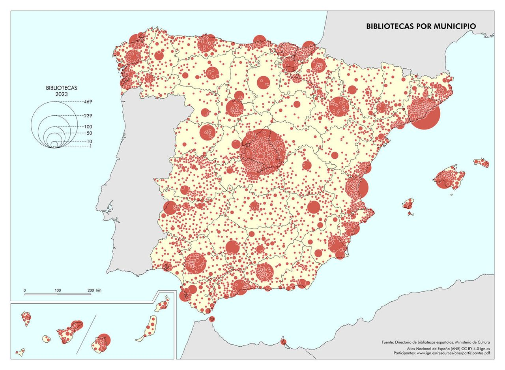

| Package | Description |
|---|---|
| tidyverse | Collection of packages (visualization, manipulation): ggplot2, dplyr, purrr, etc. |
| mapSpain | Administrative boundaries of Spain at different levels |
| sf | Simple Feature: import, export and manipulate vector data |
| janitor | Simple functions for examining and cleaning dirty data |
| patchwork | Simple grammar to combine separate ggplots into the same graphic |
I recently came across a map from the National Atlas of Spain showing the number of libraries by municipality. However, one thing directly caught my attention. There’s a saying that many maps show only the population, and this seems to be the case here. The map does not provide any remarkable information about the distribution of libraries; it merely shows where the most people live. There are many phenomena that depend on population. It can be assumed that the number of libraries largely depends on the number of inhabitants in each municipality. Therefore, we see cities like Madrid, Barcelona, Seville, Valencia, and many provincial capitals with a higher number of libraries.

Tip
A good practice is always to normalize variables that depend on the population.
Normalization of population-dependent variables can be performed in different ways, depending on the context and type of data. In our case, it involves dividing the number of libraries by the total population. To avoid very small numbers, it is common to multiply by a fixed population, such as 10,000.
\[\text{Libraries per 10,000 inhabitants} = \left( \frac{\text{Number of libraries}}{\text{Total population}} \right) \times 10,000\]
If you divide the other way around, it gives you a different perspective. You are calculating how many people, on average, have access to a single library.
\[\text{Inhabitants per library} = \frac{\text{Total population}}{\text{Number of libraries}}\]
Let’s get to work!
Packages
# install the packages if necessary
if (!require("tidyverse")) install.packages("tidyverse")
if (!require("mapSpain")) install.packages("mapSpain")
if (!require("sf")) install.packages("sf")
if (!require("janitor")) install.packages("janitor")
if (!require("patchwork")) install.packages("patchwork")
# packages
library(tidyverse)
library(readxl)
library(sf)
library(mapSpain)
library(janitor)
library(patchwork)Data
In this post we will use a dataset of libraries from Spain for 2022 (download)1 which I obtained from the Ministry of Culture. In this step we also import the population data from the INE and municipality boundaries from the mapSpain package.
# import library data
bib <- read_excel("datos.xlsx") |>
clean_names() |>
filter(pais == "España")
bib# A tibble: 7,482 × 26
niden nombre nombre_ca pais codigo_ca ca codigo_provincia provincia
<chr> <chr> <lgl> <chr> <chr> <chr> <chr> <chr>
1 397-4003003 Bibli… NA Espa… 01 Anda… 04 Almería
2 397-4003001 Bibli… NA Espa… 01 Anda… 04 Almería
3 397-4003002 Bibli… NA Espa… 01 Anda… 04 Almería
4 580-4004001 Bibli… NA Espa… 01 Anda… 04 Almería
5 589-4005001 Bibli… NA Espa… 01 Anda… 04 Almería
6 398-4006001 Bibli… NA Espa… 01 Anda… 04 Almería
7 590-4007001 Bibli… NA Espa… 01 Anda… 04 Almería
8 8468-10180 Bibli… NA Espa… 01 Anda… 04 Almería
9 399-4011001 Bibli… NA Espa… 01 Anda… 04 Almería
10 412-7108 Bibli… NA Espa… 01 Anda… 04 Almería
# ℹ 7,472 more rows
# ℹ 18 more variables: codigo_municipio <chr>, municipio <chr>,
# entidad_menor <chr>, direccion <chr>, distrito_postal <chr>,
# tipologia <chr>, telefono <chr>, correo_electronico <chr>,
# pagina_web <chr>, tipo_biblioteca <chr>, ano_fundacion <dbl>,
# telefono2 <chr>, longitud <chr>, latitud <chr>, correo_prestamo <chr>,
# acceso_catalogo <chr>, titularidad <chr>, gestion <chr># region and municipality boundaries
ccaa <- esp_get_ccaa() # for the map
mun <- esp_get_munic()
munSimple feature collection with 8131 features and 7 fields
Geometry type: GEOMETRY
Dimension: XY
Bounding box: xmin: -13.21926 ymin: 34.70178 xmax: 4.32409 ymax: 43.7889
Geodetic CRS: ETRS89
First 10 features:
codauto ine.ccaa.name cpro ine.prov.name cmun name LAU_CODE
382 01 Andalucía 04 Almería 001 Abla 04001
379 01 Andalucía 04 Almería 002 Abrucena 04002
374 01 Andalucía 04 Almería 003 Adra 04003
375 01 Andalucía 04 Almería 004 Albánchez 04004
358 01 Andalucía 04 Almería 005 Alboloduy 04005
373 01 Andalucía 04 Almería 006 Albox 04006
350 01 Andalucía 04 Almería 007 Alcolea 04007
364 01 Andalucía 04 Almería 008 Alcóntar 04008
352 01 Andalucía 04 Almería 009 Alcudia de Monteagud 04009
349 01 Andalucía 04 Almería 010 Alhabia 04010
geometry
382 POLYGON ((-2.77744 37.23836...
379 POLYGON ((-2.88984 37.09213...
374 POLYGON ((-2.93161 36.75079...
375 POLYGON ((-2.13138 37.29959...
358 POLYGON ((-2.70077 37.09674...
373 POLYGON ((-2.15335 37.54576...
350 POLYGON ((-3.05663 36.88506...
364 POLYGON ((-2.65344 37.33238...
352 POLYGON ((-2.27371 37.2416,...
349 POLYGON ((-2.5425 36.97485,...# population data
pob <- read_csv2("33570.csv") |> janitor::clean_names()
pob# A tibble: 10,739,520 × 5
sexo municipios edad_grupos_quinquenales periodo total
<chr> <chr> <chr> <chr> <dbl>
1 Total Total Nacional Todas las edades 1 de enero de 2022 47475420
2 Total Total Nacional Todas las edades 1 de enero de 2021 47385107
3 Total Total Nacional Todas las edades 1 de enero de 2020 47450795
4 Total Total Nacional Todas las edades 1 de enero de 2019 47026208
5 Total Total Nacional Todas las edades 1 de enero de 2018 46722980
6 Total Total Nacional Todas las edades 1 de enero de 2017 46572132
7 Total Total Nacional Todas las edades 1 de enero de 2016 46557008
8 Total Total Nacional Todas las edades 1 de enero de 2015 46624382
9 Total Total Nacional Todas las edades 1 de enero de 2014 46771341
10 Total Total Nacional Todas las edades 1 de enero de 2013 47129783
# ℹ 10,739,510 more rowsPreparation
For the library data, all that is needed is to create the municipality code and count the number of libraries. Then, we use the left_join() function to join the vector data of the municipalities and the number of libraries. We also prepare the population data. Here, we must choose the whole population (any gender and age) and the year 2022. The municipality code must be extracted as a 5-digit number.
# select needed columns and create municipality code
bib <- select(bib, codigo_provincia, codigo_municipio) |>
mutate(LAU_CODE = str_c(codigo_provincia, codigo_municipio))
# count libraries
bib_count <- count(bib, LAU_CODE)
# join with boundaries
mun <- left_join(mun, bib_count)
# filter population data
pob_mun <- filter(
pob, sexo == "Total",
municipios != "Total Nacional",
edad_grupos_quinquenales == "Todas las edades",
str_detect(periodo, "2022")
) |>
select(municipios, total) |>
mutate(LAU_CODE = str_extract(municipios, "[0-9]{5}"))Visualization
To create a proportional symbol map, we simply use the centroid of the municipality for the location. It is important to order the observations from highest to lowest, which ensures that the smaller circles are drawn on top of the larger ones.
In ggplot2, we use geom_sf() for the vector data and indicate size with the column n. Additionally, we set the size range with scale_size() and specify the breaks in the legend. We are also making a few small aesthetic changes.
m1 <- st_centroid(mun) |> arrange(-n)
p1 <- ggplot() +
geom_sf(data = ccaa, fill = "grey90", colour = "white") +
geom_sf(
data = m1,
aes(size = n),
alpha = .5, shape = 21, fill = "#7a0177", colour = "white"
) +
scale_size(range = c(1, 20), breaks = c(10, 50, 150, 400)) +
labs(size = NULL, title = "Absolute number of libraries") +
theme_void()
p1{kind=link}
This map clearly resembles the one in the national atlas. Big cities, such as Madrid, Barcelona or Valencia, are highlighted.
But what would we see if we normalize the variable?
To do this, we must first join the population data and calculate the rate.
m2 <- st_centroid(mun) |>
left_join(pob_mun) |>
mutate(norm_pob = n * 10000 / total) |>
arrange(-norm_pob)
select(m2, n, total:norm_pob)Simple feature collection with 8131 features and 3 fields
Geometry type: POINT
Dimension: XY
Bounding box: xmin: -13.12607 ymin: 34.75565 xmax: 4.2862 ymax: 43.7256
Geodetic CRS: ETRS89
First 10 features:
n total norm_pob geometry
1 1 19 526.31579 POINT (-1.30825 43.01419)
2 1 52 192.30769 POINT (-2.812271 40.57015)
3 1 57 175.43860 POINT (-2.868489 41.72316)
4 1 86 116.27907 POINT (-6.472424 40.34306)
5 1 95 105.26316 POINT (-0.4256999 40.02079)
6 1 96 104.16667 POINT (-1.24694 42.2997)
7 1 96 104.16667 POINT (-5.350944 39.71565)
8 1 102 98.03922 POINT (-0.3685699 41.34055)
9 1 104 96.15385 POINT (-5.427423 40.37489)
10 1 104 96.15385 POINT (-5.658987 39.72373)Now we simply repeat the same map using the norm_pob column.
p2 <- ggplot() +
geom_sf(data = ccaa, fill = "grey90", colour = "white") +
geom_sf(
data = m2,
aes(size = norm_pob),
alpha = .5, shape = 21, fill = "#7a0177", colour = "white"
) +
scale_size(range = c(.5, 10), breaks = c(1, 10, 100, 500)) +
labs(size = NULL, title = "Libraries per 10,000 inhabitants") +
theme_void()
p2{kind=link}
This map now tells a completely different story. We see a high number of libraries per inhabitant in certain regions, while others are more homogeneous with a consistently low number of libraries. However, there are also impossible values that stand out. For example, in the north, Roncesvalles reaches 526 libraries per 10,000 inhabitants! That can’t be right, can it? This issue is caused by the very small municipalities. In this case, there is one library for every 19 inhabitants. In any case, what is also noticeable is that there are significantly fewer libraries per inhabitant in major cities like Madrid and Barcelona, with only 1 library per 10,000 inhabitants. It is not easy to find a multiplier that works uniformly to reflect both small and large municipalities.
To solve the problem of small municipalities, one possible good strategy would be to exclude all those with less than 100 inhabitants. It can even help in reducing overlapping.
p3 <- ggplot() +
geom_sf(data = ccaa, fill = "grey90", colour = "white") +
geom_sf(
data = filter(m2, total > 100),
aes(size = norm_pob),
alpha = .5, shape = 21, fill = "#7a0177", colour = "white"
) +
scale_size(range = c(.1, 10), breaks = c(1, 10, 50, 90)) +
labs(size = NULL, title = "Libraries per 10,000 inhabitants (without municipalities < 100)") +
theme_void()
p3{kind=link}
Finally, we create a comparison with the patchwork grammar.
p1 + p2 + p3 & theme(plot.title = element_text(size = 20, hjust = .5),
legend.text = element_text(size = 12))
Different ways of telling different stories! A completely different question is how much the overlapping of circles prevents us from reading the map accurately. For instance, we could use a Dorling cartogram for the population and use color to show the number of libraries. Below, you see an example with the foreign population by origin. The R Code for this I will post another time.
{kind=link}
Footnotes
Include also population data.↩︎
Reuse
Citation
For attribution, please cite this work as:
Royé, Dominic. 2025. “Always Normalize You Data.” January
5, 2025. https://dominicroye.github.io/blog/2025-01-07-always-normalize-your-data/.